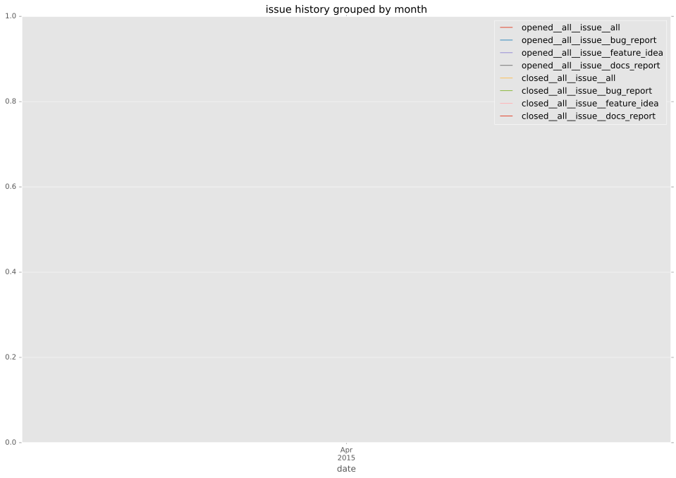
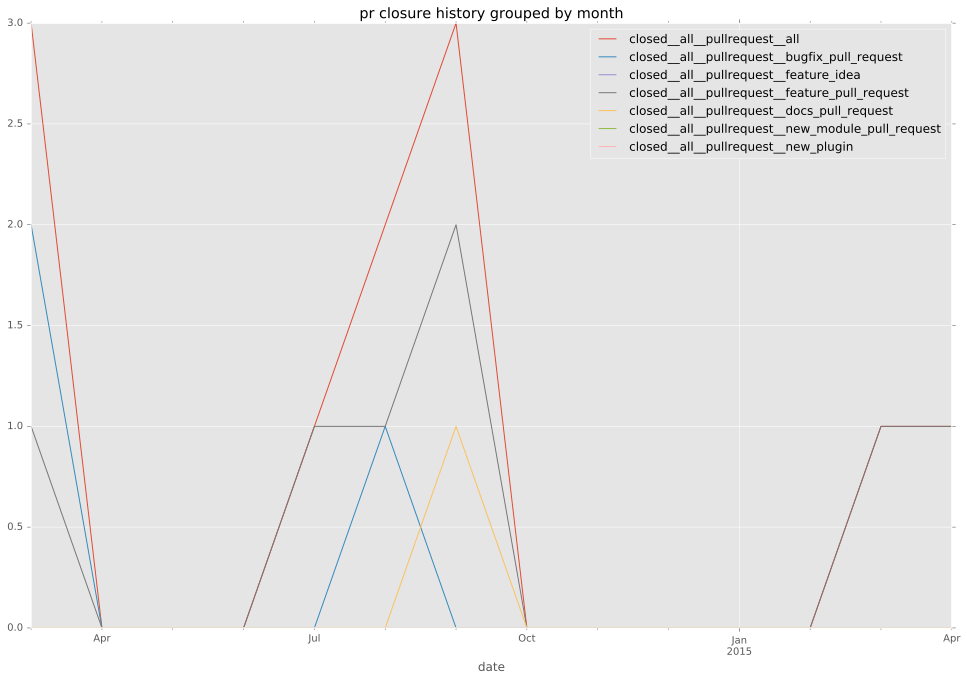

authors
maintainers
- DEPRECATED
contributors
- mpdehaan : 2 commits
- willthames : 2 commits
- abadger : 4 commits
- bcoca : 1 commits
- follower : 1 commits
- talonx : 3 commits
- jctanner : 2 commits
- lorin : 36 commits
- jimi-c : 1 commits
total issue counts
feature pull request: 8
pullrequest: 13
docs pull request: 1
bugfix pull request: 4
issue: 1
bug report: 1
issue history

pullrequest history

days open by issue type
bugfix pull request
count: 6
std: 72.0983125091
min: 0
max: 177
median: 0.5
mean: 29.8333333333
all
count: 19
std: 54.5214159328
min: 0
max: 177
median: 40.0
mean: 54.8421052632
pullrequest
count: 0
std: nan
min: nan
max: nan
median: nan
mean: nan
docs pull request
count: 1
std: nan
min: 145
max: 145
median: 145.0
mean: 145.0
feature pull request
count: 11
std: 38.6635839942
min: 0
max: 123
median: 51.0
mean: 61.5454545455
issue
count: 0
std: nan
min: nan
max: nan
median: nan
mean: nan
bug report
count: 1
std: nan
min: 41
max: 41
median: 41.0
mean: 41.0
closures grouped by total days open